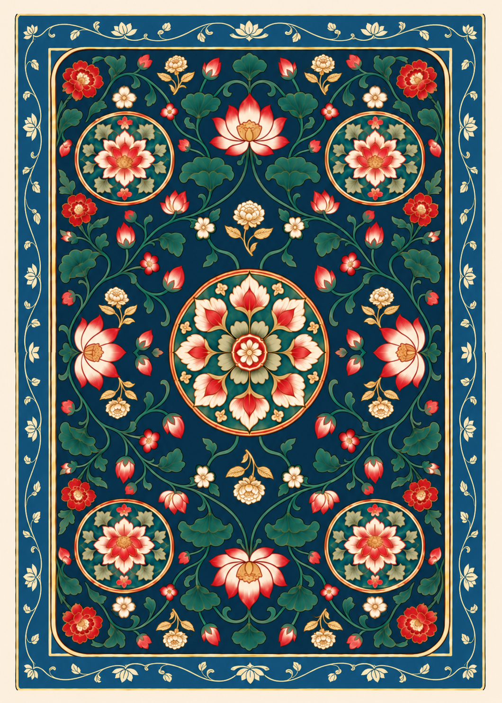

← Design 2 gallery
Design 2 · Dark interior study
A darker Prussian blue fills the background around the interior flowers and vines, carrying the border color into the middle. The outer paper margin and ivory petals retain their warm contrast.
Design 1 · Reference Design 2 · Current
Design 2 · Current Design 2 · Dark interior
Design 2 · Dark interior
ImageGen visual study. Registration, exact half-turn symmetry, and production export have not been applied.
Saved edit prompt and references